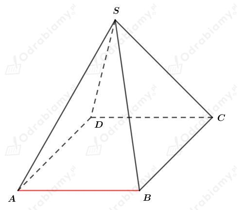
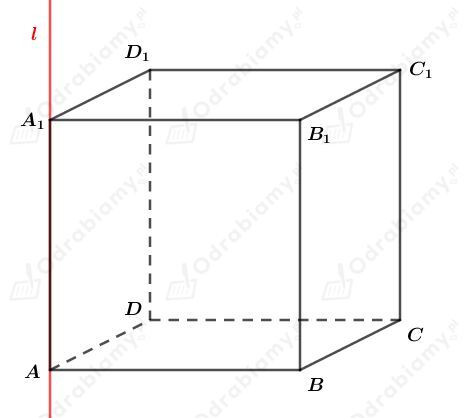

Rysunek:

Proste skośne nie leżą w jednej płaszczyźnie, zatem nie mają punktów wspólnych.
W prostych skośnych do prostej zawierającej krawędź AB zawierają się krawędzie SC oraz SD.
Rysunek:

Prosta l zawiera krawędź AA1 tego sześcianu.
a)
Proste zawierające krawędzie tego sześcianu, które są równoległe do prostej l to:
b)
Proste zawierające krawędzie tego sześcianu, które są prostopadłe do prostej l to:
Rysunek:
Wskażemy pary wierzchołków, które wyznaczają proste skośne nieprostopadłe do prostej l. Mamy: